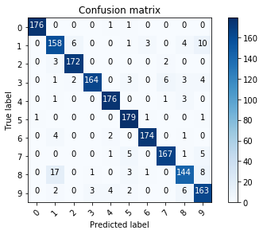

In [13]: runfile('/home/antoniomanuelfr/Documentos/Computacion-y-Sistemas-Inteligentes/AA/Practicas/Practica3/RegresionLogistica_optDigits_ajuste_hparametros.py', wdir='/home/antoniomanuelfr/Documentos/Computacion-y-Sistemas-Inteligentes/AA/Practicas/Practica3')
Best parameters set found on development set:
{'C': 0.9, 'penalty': 'l2', 'solver': 'newton-cg'}
Grid scores on development set:
0.947 (+/-0.009) for {'C': 0.9, 'penalty': 'l1', 'solver': 'liblinear'}
0.942 (+/-0.012) for {'C': 0.5, 'penalty': 'l1', 'solver': 'liblinear'}
0.923 (+/-0.011) for {'C': 0.2, 'penalty': 'l1', 'solver': 'liblinear'}
0.914 (+/-0.016) for {'C': 0.15, 'penalty': 'l1', 'solver': 'liblinear'}
0.908 (+/-0.015) for {'C': 0.125, 'penalty': 'l1', 'solver': 'liblinear'}
0.892 (+/-0.013) for {'C': 0.1, 'penalty': 'l1', 'solver': 'liblinear'}
0.947 (+/-0.015) for {'C': 0.9, 'penalty': 'l2', 'solver': 'newton-cg'}
0.943 (+/-0.015) for {'C': 0.5, 'penalty': 'l2', 'solver': 'newton-cg'}
0.934 (+/-0.017) for {'C': 0.2, 'penalty': 'l2', 'solver': 'newton-cg'}
0.931 (+/-0.014) for {'C': 0.15, 'penalty': 'l2', 'solver': 'newton-cg'}
0.929 (+/-0.014) for {'C': 0.125, 'penalty': 'l2', 'solver': 'newton-cg'}
0.926 (+/-0.020) for {'C': 0.1, 'penalty': 'l2', 'solver': 'newton-cg'}
END OF TUNNING PARAMETERS!!!
The model is trained on the full train set and with best parameters
The model is going to be saved in: LogicRegresion_model.pkl
In [14]: runfile('/home/antoniomanuelfr/Documentos/Computacion-y-Sistemas-Inteligentes/AA/Practicas/Practica3/RegresionLogistica_optDigits_ajuste_modelo.py', wdir='/home/antoniomanuelfr/Documentos/Computacion-y-Sistemas-Inteligentes/AA/Practicas/Practica3')
The model is trained on the full train set and with best parameters
The scores are computed with full test set
precision recall f1-score support
0 0.99 0.99 0.99 178
1 0.85 0.87 0.86 182
2 0.96 0.97 0.96 177
3 0.98 0.90 0.93 183
4 0.96 0.97 0.96 181
5 0.92 0.98 0.95 182
6 0.97 0.96 0.97 181
7 0.95 0.93 0.94 179
8 0.89 0.83 0.86 174
9 0.85 0.91 0.88 180
avg / total 0.93 0.93 0.93 1797
Confusion Matrix
Confusion matrix, without normalization
[[176 0 0 0 1 1 0 0 0 0]
[ 0 158 6 0 0 1 3 0 4 10]
[ 0 3 172 0 0 0 0 2 0 0]
[ 0 1 2 164 0 3 0 6 3 4]
[ 0 1 0 0 176 0 0 1 3 0]
[ 1 0 0 0 0 179 1 0 0 1]
[ 0 4 0 0 2 0 174 0 1 0]
[ 0 0 0 0 1 5 0 167 1 5]
[ 0 17 0 1 0 3 1 0 144 8]
[ 0 2 0 3 4 2 0 0 6 163]]

In [15]: